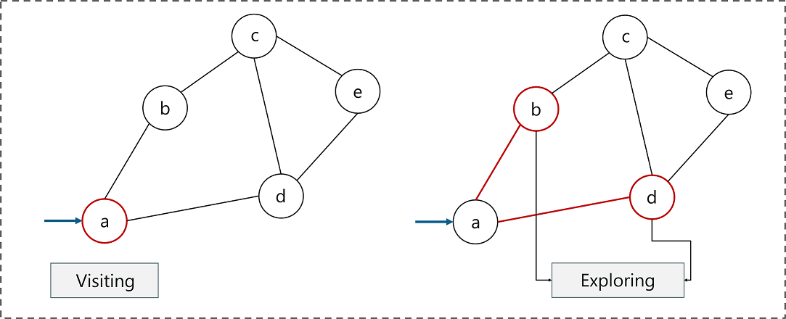
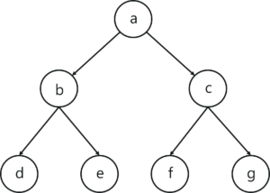
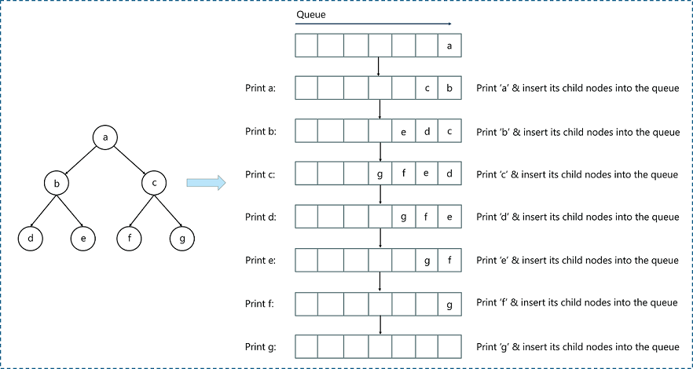
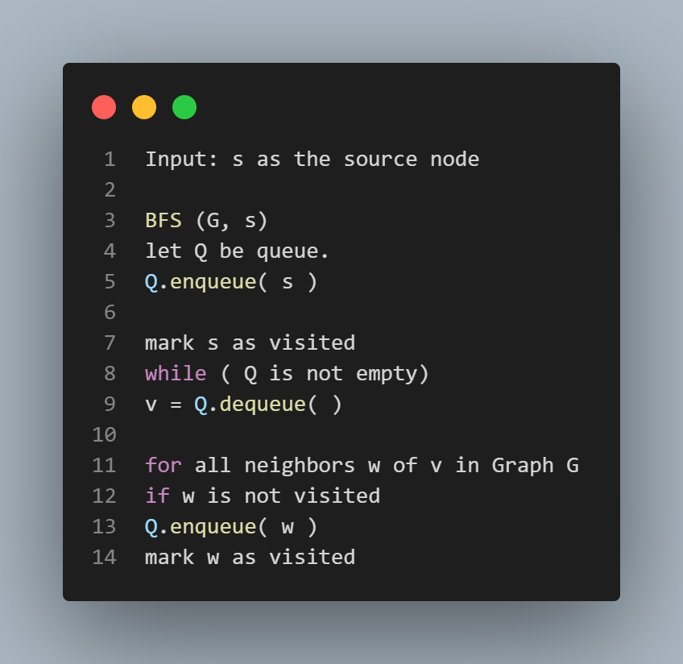

Breadth-First Search (BFS)
Breadth-First Search algorithm is a graph traversing technique, where you select a random initial node (source or root node) and start traversing the graph layer-wise in such a way that all the nodes and their respective children nodes are visited and explored.
Before we move further and understand Breadth-First Search with an example, let’s get familiar with two important terms related to graph traversal:

Visiting a node : Just like the name suggests, visiting a node means to visit or select a node
Exploring a node : Exploring the adjacent nodes (child nodes) of a selected node.
Understanding the Breadth-First Search Algorithm with an example :
Breadth-First Search algorithm follows a simple, level-based approach to solve a problem. Consider the below binary tree (which is a graph). Our aim is to traverse the graph by using the Breadth-First Search Algorithm.
Before we get started, you must be familiar with the main data structure involved in the Breadth-First Search algorithm.
A queue is an abstract data structure that follows the First-In-First-Out methodology (data inserted first will be accessed first). It is open on both ends, where one end is always used to insert data (enqueue) and the other is used to remove data (dequeue).

Now let’s take a look at the steps involved in traversing a graph by using Breadth-First Search:
Step 1: Take an Empty Queue.
Step 2: Select a starting node (visiting a node) and insert it into the Queue.
Step 3: Provided that the Queue is not empty, extract the node from the Queue and insert its child nodes (exploring a node) into the Queue.
Step 4: Print the extracted node.
Don’t worry if you’re confused, we shall understand this with an example.
Take a look at the below graph, we will use the Breadth-First Search algorithm to traverse through the graph.

In our case, we’ll assign node ‘a’ as the root node and start traversing downward and follow the steps mentioned above.
The above image depicts the end-to-end process of Breadth-First Search Algorithm. Let me explain this in more depth.
1. Assign ‘a’ as the root node and insert it into the Queue.
2. Extract node ‘a’ from the queue and insert the child nodes of ‘a’, i.e., ‘b’ and ‘c’.
3. Print node ‘a’.
4. The queue is not empty and has node ‘b’ and ‘c’. Since ‘b’ is the first node in the queue, let’s extract it and insert the child nodes of ‘b’, i.e., node ‘d’ and ‘e’.
5. Repeat these steps until the queue gets empty. Note that the nodes that are already visited should not be added to the queue again.
6. Now let’s look at the pseudocode of Breadth-First Search algorithm.

Now let’s look at the pseudocode of Breadth-First Search algorithm.
Breadth-First Search Algorithm Pseudocode
Here’s the pseudocode to implement the Breadth-First Search Algorithm:

In the above code, the following steps are executed:
1. (G, s) is input, here G is the graph and s is the root node
2. A queue ‘Q’ is created and initialized with the source node ‘s’
3. All child nodes of ‘s’ are marked
4. Extract ‘s’ from queue and visit the child nodes
5. Process all the child nodes of v
6. Stores w (child nodes) in Q to further visit its child nodes
7. Continue till ‘Q’ is empty =
CP Problem:
Implementation of Breadth-First-_Search-Algorithm (BFS) in C++ :
Solution :
Source Code

Watch the video for understande more-